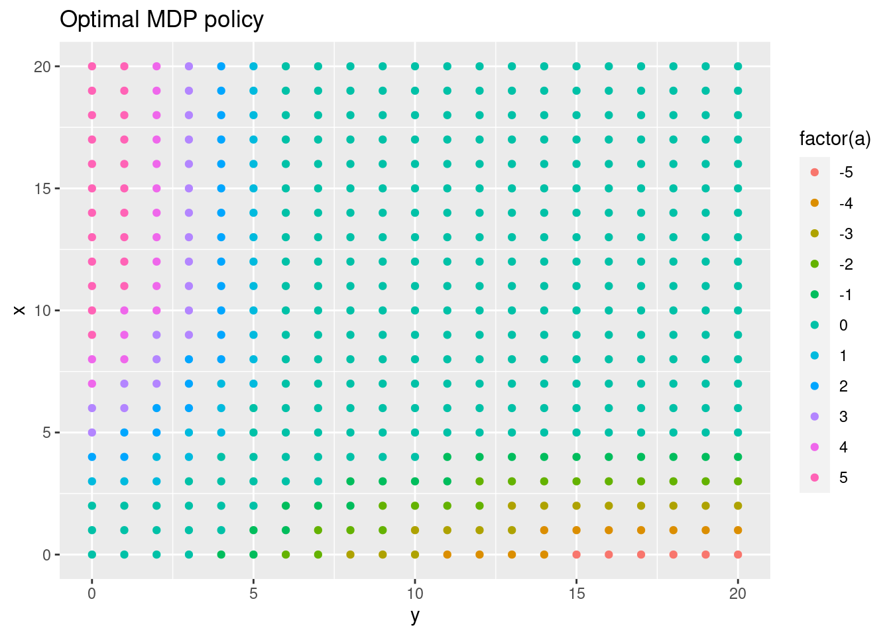

Module 8 Temporal difference methods for control
In Module 7 temporal difference (TD) was used to estimate state-values. In this module we focus on improving the policy (control) by applying generalized policy iteration (GPI) using TD methods. GPI repeatedly apply policy evaluation and policy improvement. Since we do not have a model (the transition probability matrix and reward distribution are not known) all our action-values are estimates. Hence an element of exploration are needed to estimate the action-values. For convergence to the optimal policy a model-free GPI algorithm must satisfy:
- Infinite exploration: all state-action \((s,a)\) pairs should be explored infinitely many times as the number of iterations go to infinity (in the limit), i.e. as the number of iterations \(k\) goes to infinity the number of visits \(n_k\) does too \[\lim_{k\rightarrow\infty} n_k(s, a) = \infty.\]
- Greedy in the limit: while we maintain infinite exploration, we do eventually need to converge to the optimal policy: \[\lim_{k\rightarrow\infty} \pi_k(a|s) = 1 \text{ for } a = \arg\max_a q(s, a).\]
8.1 Learning outcomes
By the end of this module, you are expected to:
- Describe how generalized policy iteration (GPI) can be used with TD to find improved policies.
- Identify the properties that must the satisfied for GPI to converge to the optimal policy.
- Derive and explain SARSA an on-policy GPI algorithm using TD.
- Describe the relationship between SARSA and the Bellman equations.
- Derive and explain Q-learning an off-policy GPI algorithm using TD.
- Argue how Q-learning can be off-policy without using importance sampling.
- Describe the relationship between Q-learning and the Bellman optimality equations.
- Derive and explain expected SARSA an on/off-policy GPI algorithm using TD.
- Describe the relationship between expected SARSA and the Bellman equations.
- Explain how expected SARSA generalizes Q-learning.
- List the differences between Q-learning, SARSA and expected SARSA.
- Apply the algorithms to an MDP to find the optimal policy.
The learning outcomes relate to the overall learning goals number 3, 4, 6, 9, and 12 of the course.
8.2 Textbook readings
For this week, you will need to read Chapter 6.4-6.6 in Sutton and Barto (2018). Read it before continuing this module. A summary of the book notation can be seen here.
8.3 SARSA - On-policy GPI using TD
The first GPI algorithm we will consider is SARSA. Since we do not have a model we need to estimate action-values so the optimal policy can be found using \(q_*\) (see Eq. (4.3)). Hence to predict action-values for a policy \(\pi\), the incremental update Eq. (7.1) must be modified to use \(Q\) values: \[ Q(S_t, A_t) \leftarrow Q(S_t, A_t) + \alpha \left[R_{t+1} + \gamma Q(S_{t+1}, A_{t+1}) - Q(S_t, A_t) \right] \] Note given a policy \(\pi\) you need to know \(S_t, A_t, R_{t+1}, S_{t+1}, A_{t+1}\) or short SARSA before you can make an update. This acronym is used to name the algorithm.
The algorithm is given in Figure 8.1. To ensure infinite exploration of all action-values, we need e.g. an \(\epsilon\)-greedy policy. The algorithm can also be applied for processes with continuing tasks. To ensure greedy in the limit a decreasing epsilon can be used (e.g. \(\epsilon = 1/t\)). No stopping criterion is given but could stop when small differences in action-values are observed.
![SARSA - On-policy GPI using TD [@Sutton18].](img/td-gpi-sarsa.png)
Figure 8.1: SARSA - On-policy GPI using TD (Sutton and Barto 2018).
SARSA is a sample based algorithm that do updates based on the Bellman equation for action-values (\(q\)): \[ \begin{align} q_\pi(s, a) &= \mathbb{E}_\pi[G_t | S_t = s, A_t = a] \\ &= \mathbb{E}_\pi[R_{t+1} + \gamma G_{t+1} | S_t = s, A_t = a] \\ &= \sum_{s',r} p(s', r | s, a) \left(r + \gamma v_\pi(s')\right) \\ &= \sum_{s',r} p(s', r | s, a) \left(r + \gamma \sum_{a'} \pi(a'|s) q_\pi(s', a')\right). \end{align} \] That is, we update the estimate based on samples \(r\) and the estimate \(q_\pi\) in \(s'\). This is the same approach as policy iteration in DP: we first calculate new estimates of \(q_\pi\) given the current policy \(\pi\) and then improve. Hence SARSA is a sample based version of policy iteration in DP.
8.4 Q-learning - Off-policy GPI using TD
Q-learning resembles SARSA; however there are some differences. The algorithm is given in Figure 8.2. Note the incremental update equation is now: \[\begin{equation} Q(S_t, A_t) \leftarrow Q(S_t, A_t) + \alpha \left[R_{t+1} + \gamma \max_{a} Q(S_{t+1}, a) - Q(S_t, A_t) \right] \end{equation}\] That is, the next action used to update \(Q\) is selected greedy. That is, we are no longer following an \(\epsilon\)-greedy policy for our updates.
![Q-learning - Off-policy GPI using TD [@Sutton18].](img/td-gpi-q-learn.png)
Figure 8.2: Q-learning - Off-policy GPI using TD (Sutton and Barto 2018).
SARSA is an on-policy algorithm, meaning that the behavioural and target policy is the same, e.g. an \(\epsilon\)-greedy policy to ensure exploration. That is, for fixed \(\epsilon\) the greedy in the limit assumption is not fulfilled. Q-learning, on the other hand, is an off-policy algorithm where the behavioural policy is an \(\epsilon\)-greedy and the target policy is the (deterministic) greedy policy. That is, Q-learning fulfil both the ‘infinite exploration’ and ‘greedy in the limit’ assumptions.
Note under MC prediction an off-policy algorithm needed to use importance sampling to estimate the action-value of the target policy (see Section 6.5). This is not necessary for one-step TD, since \[ \begin{align} q_\pi(s,a) &= \mathbb{E}_{\pi}[R_t + \gamma G_{t+1}|S_t = s, A_t = a] \\ &= \sum_{s',r} p(s', r | s, a) \left(r + \gamma \sum_{a'} \pi(a'|s) q_\pi(s', a')\right) \\ &= \sum_{s',r} p(s', r | s, a) \left(r + \gamma \max_{a'} q_\pi(s', a')\right) \\ \end{align} \tag{8.1} \]
That is, because the target policy is greedy and deterministic expectation the \(G_{t+1}\) becomes a maximum. Hence we can update the action-value estimates \(Q\) for the target policy \(\pi\) even though we sample from an \(\epsilon\)-greedy behavioural policy.
Q-learning is a sample based algorithm that do updates based on the Bellman optimality equation for action-values (\(q_*\)): \[ \begin{align} q_*(s, a) &= \max_\pi q_\pi(s, a) \\ &= \max_\pi \sum_{s',r} p(s', r | s, a) \left(r + \gamma v_\pi(s')\right) \\ &= \sum_{s',r} p(s', r | s, a) \left(r + \gamma \max_\pi v_\pi(s')\right) \\ &= \sum_{s',r} p(s', r | s, a) \left(r + \gamma \max_{a'} q_*(s', a')\right) \end{align} \] That is, we update the estimate based on samples \(r\) and the estimate \(q_*\) in \(s'\). This is the same approach as value iteration in DP: we update the estimates of \(q_\pi\) and improve the policy in one operation. Hence Q-learning is a sample based version of value iteration in DP.
8.5 Expected SARSA - GPI using TD
The expected SARSA, as SARSA, focus on the Bellman equation (8.1). SARSA generate action \(A_{t+1}\) from the policy \(\pi\) and use the estimated action-value of \((S_{t+1},A_{t+1})\). However, since we know the current policy \(\pi\), we might update based on the expected value instead: \[ Q(S_t, A_t) \leftarrow Q(S_t, A_t) + \alpha \left[R_{t+1} + \gamma \sum_{a} \pi(a | S_{t+1}) Q(S_{t+1}, a) - Q(S_t, A_t) \right] \\ \] That is, we use a better estimate of the Bellman equation (8.1) by not sampling \(A_{t+1}\) but using the (deterministic) expectation over all actions instead. Doing so reduces the variance induced by selecting random actions according to an \(\epsilon\)-greedy policy. As a result, given the same amount of experiences, expected SARSA generally performs better than SARSA, but has a higher computational cost.
Expected SARSA is more robust to different step-size values. The incremental update formula can be written as \[ Q(S_t, A_t) \leftarrow Q(S_t, A_t) + \alpha \left[T_t - Q(S_t, A_t) \right] = (1-\alpha)Q(S_t, A_t) + \alpha T_t, \] with step-size \(\alpha\) and target \(T_t\). For SARSA the target is \[T_t = R_{t+1} + \gamma Q(S_{t+1}, A_{t+1}),\] and for expected SARSA the target is: \[T_t = R_{t+1} + \gamma \sum_{a} \pi(a | S_{t+1}) Q(S_{t+1}, a).\] Now assume that we have run the algorithm over many time-steps so that our estimates \(Q(S_t, A_t)\) are close to \(q_*(S_t, A_t)\). Since the target in expected SARSA is deterministic (we do not sample \(A_{t+1}\)), the target \(T_t \approx Q(S_t, A_t)\) and no matter the step-size \(Q(S_t, A_t)\) will be updated to the same value. On the other hand, the target in SARSA uses a sample action \(A_{t+1}\) that might have an action-value far from the expectation. This implies that for large step-sizes \(Q(S_t, A_t)\) will be updated to the target which is wrong. Hence SARSA is more sensitive to large step-sizes.
Expected SARSA can be both on-policy and off-policy. If the behavioural policy and the target policy are different it is off-policy. If they are the same it is on-policy. For instance, expected SARSA is off-policy if the target policy is greedy and the behavioural policy \(\epsilon\)-greedy. In which case expected SARSA becomes Q-learning since the expectation of a greedy policy is the maximum value (\(\pi(s|a) = 1\) here). Hence expected SARSA can be seen as a generalisation of Q-learning that improves SARSA.
8.6 Summary
Read Chapter 6.9 in Sutton and Barto (2018).
8.7 Exercises
Below you will find a set of exercises. Always have a look at the exercises before you meet in your study group and try to solve them yourself. Are you stuck, see the help page. Sometimes solutions can be seen by pressing the button besides a question. Beware, you will not learn by giving up too early. Put some effort into finding a solution!
8.7.1 Exercise - Factory Storage
Consider Example 5.8 where a factory has a storage tank with a capacity of 4 \(\mathrm{m}^{3}\) for temporarily storing waste produced by the factory. Each week the factory produces \(0,1\), 2 or 3 \(\mathrm{m}^{3}\) waste with respective probabilities \[p_{0}=\displaystyle \frac{1}{8},\ p_{1}=\displaystyle \frac{1}{2},\ p_{2}=\displaystyle \frac{1}{4} \text{ and } p_{3}=\displaystyle \frac{1}{8}.\] If the amount of waste produced in one week exceeds the remaining capacity of the tank, the excess is specially removed at a cost of $30 per cubic metre. At the end of each week there is a regular opportunity to remove all waste from the storage tank at a fixed cost of $25 and a variable cost of $5 per cubic metre.
An MDP model was formulated in Example 5.8 and solved using policy iteration. Our goal here is to solve the same problem with GPI using TD. For this we need an environment representing the problem:
library(R6)
library(hash)
library(tidyverse)
#' R6 Class representing the RL environment for the problem
RLEnvFactory <- R6Class("RLEnvFactory",
public = list(
#' @field pr Probability of 0, 1, 2, and 3 m2 waste
pr = c(1/8, 1/2, 1/4, 1/8),
#' @description Return all states (keys).
getStates = function() {
return(str_c(0:4))
},
#' @description Return all actions (keys) for a state.
#' @param s State considered.
getActions = function(s) {
if (s == "0") return("keep")
return(c("empty", "keep"))
},
#' @description Returns the next state and reward given current state and action as a list (with names `r` and `sN`).
#' @param s Current state.
#' @param a Current action.
getTimeStepData = function(s, a) {
s <- as.numeric(s)
if (a == "empty") {
return(list(r = -(25 + 5*s), sN = as.character(sample(0:3, 1, prob = self$pr))))
}
if (a == "keep") {
sN <- s + sample(0:3, 1, prob = self$pr)
rew <- 0
if (sN > 4) {
rew <- -30 * (sN - 4)
sN <- 4
}
return(list(r = rew, sN = as.character(sN)))
}
stop("Error finding next state and reward!")
}
)
)Note that for using the GPI algorithms in the agent class we need a method getTimeStepData that given a state and action return the reward and the next state.
- Consider the
getTimeStepDatamethod and explain what it does. Generate a reward and next state for \((s,a)\) pairs (0, keep), (4, keep) and (2, empty).
Next we have to add the GPI algorithms to the generic agent class:
library(R6)
library(hash)
library(tidyverse)
## Generic RL agent for tabular data (R6 class)
RLAgent <- R6Class("RLAgent",
public = list(
#' @field model The model is used to represent the information we have. The
#' model is represented using a hash list for the states. Each states contains
#' - A list with `actions` (a hash #' list with actions).
#' - `pi` (a named vector with policy pr (only positive values).
#' - `piG` the greedy action (a string).
#' - `n` a visit counter
#' The `actions` hash list contains
#' - The action-values `q`.
#' - `n` a visit counter.
model = NULL,
#' @description Create an object (when call new).
initialize = function() {
self$model <- hash()
return(invisible(NULL))
},
#' @description Add state and action to the hash (only if not already added)
#' @param s State key/string.
#' @param a Action key/string.
addStateAction = function(s, a) {
if (!has.key(s, self$model)) addStates(s)
if (!has.key(a, self$model[[s]]$actions)) self$model[[s]]$actions[[a]] <- list(q = 0, n = 0)
return(invisible(NULL))
},
#' @description Add the states (keys) and define void policy and empty action hash.
#' @param states A vector of states (converted to strings).
addStates = function(states) {
keys <- make.keys(states)
self$model[keys] <- list(pi = NA) # don't use pi = NULL since then won't be defined
for (s in keys) {
self$model[[s]]$v <- NA
self$model[[s]]$actions <- hash()
self$model[[s]]$n <- 0 # counter visited
}
return(invisible(NULL))
},
#' @description Add the actions to a state
#' @param s State (key).
#' @param actions A vector of actions (converted to strings).
addActions = function(s, actions) {
keys <- make.keys(actions)
for (a in keys) {
self$addStateAction(s, a)
}
return(invisible(NULL))
},
#' @description Add states and actions to the hash with initial values. If already exists nothing happens.
#' @param df A tibble with string columns `s` (states) and `a` (actions).
addStatesAndActions = function(df) {
for (i in 1:nrow(df)) {
self$addStateAction(df$s[i], df$a[i])
}
return(invisible(NULL))
},
#' @description Set the action-values for all actions.
#' @param value The value.
setActionValue = function(value = 0) {
for (s in keys(self$model)) {
for (a in keys(self$model[[s]]$actions)) {
self$model[[s]]$actions[[a]]$q = value
}
}
return(invisible(NULL))
},
#' @description Set the state-value of states
#' @param states A vector of states.
#' @param value The value.
setStateValue = function(states = keys(self$model), value = 0) {
for (s in states) {
self$model[[s]]$v <- value
}
return(invisible(NULL))
},
#' @description Set the action visit counter values for all actions.
#' @param ctrValue Counter value.
setActionCtrValue = function(ctrValue = 0) {
for (s in keys(self$model)) {
for (a in keys(self$model[[s]]$actions)) {
self$model[[s]]$actions[[a]]$n = ctrValue
}
}
return(invisible(NULL))
},
#' @description Set the action-values for a single action (including the counter values).
#' @param value The value.
#' @param ctrValue Counter value.
setActionValueSingle = function(value = 0, ctrValue = 0, s, a) {
self$model[[s]]$actions[[a]]$q = value
self$model[[s]]$actions[[a]]$n = ctrValue
return(invisible(NULL))
},
#' @description Set the policy to a random epsilon-greedy policy.
#' @param eps Epsilon used in epsilon-greedy policy.
setRandomEpsGreedyPolicy = function(eps) {
states <- keys(self$model)
for (s in states) {
actions <- self$getActionKeys(s)
self$model[[s]]$pi <- rep(eps/length(actions), length(actions))
names(self$model[[s]]$pi) <- actions
piG <- sample(self$getActionKeys(s), 1)
self$model[[s]]$pi[piG] <- self$model[[s]]$pi[piG] + 1 - eps
}
return(invisible(NULL))
},
#' @description Set the policy to the optimal epsilon-greedy policy
#' @param eps Epsilon used in epsilon-greedy policy.
#' @param states States under consideration.
setEpsGreedyPolicy = function(eps, states) {
for (s in states) {
actions <- self$getActionKeys(s)
self$model[[s]]$pi <- rep(eps/length(actions), length(actions))
names(self$model[[s]]$pi) <- actions
idx <- nnet::which.is.max(unlist(values(self$model[[s]]$actions)["q",])) # choose among max values at random
# idx <- which.max(unlist(values(self$model[[s]]$actions)["q",])) # choose first max
# self$model[[s]]$piG <- actions[idx]
self$model[[s]]$pi[idx] <- self$model[[s]]$pi[idx] + 1 - eps
}
return(invisible(NULL))
},
#' @description Set the greedy policy based on action-values.
#' @param states States under consideration.
setGreedyPolicy = function(states = self$getStateKeys()) {
for (s in states) {
pi <- 1
actions <- self$getActionKeys(s)
# idx <- nnet::which.is.max(unlist(values(self$model[[s]]$actions)["q",])) # choose among max values at random
idx <- which.max(unlist(values(self$model[[s]]$actions)["q",])) # choose first max
names(pi) <- actions[idx]
self$model[[s]]$pi <- pi
}
return(invisible(NULL))
},
#' @description Set the policy to the named vector pi for a set of states
#' @param states States under consideration.
#' @param pi A named vector with policy pr (only psitive values).
setPolicy = function(states, pi) {
for (s in states) {
self$model[[s]]$pi <- pi
}
return(invisible(NULL))
},
#' @description Set the state visit counter values for all states.
#' @param ctrValue Counter value.
setStateCtrValue = function(ctrValue = 0) {
for (s in keys(self$model)) {
self$model[[s]]$n = ctrValue
}
return(invisible(NULL))
},
#' @description Return the state keys
getStateKeys = function() {
keys(self$model)
},
#' @description Return the state-value for a state and policy using the q/action-values
#' @param s A state.
getStateValueQ = function(s) {
pi <- self$model[[s]]$pi
# print(pi)
val <- 0
for (a in names(pi)) {
val <- val + pi[a] * self$model[[s]]$actions[[a]]$q
# print(self$model[[s]]$actions[[a]]$q)
}
# print(val)
return(val)
},
#' @description Return the state-values as a tibble
#' @param s A vector of state keys.
getStateValues = function(s = keys(self$model)) {
tibble(state = s) %>% rowwise() %>% mutate(v = self$model[[state]]$v)
},
#' @description Return the action keys
#' @param s The state considered.
getActionKeys = function(s) {
keys(self$model[[s]]$actions)
},
#' @description Return information about actions stored in a state
#' @param s The state considered.
getActionInfo = function(s) {
as.list(self$model[[s]]$actions)
},
#' @description Return the current policy as a tibble
getPolicy = function(states = self$getStateKeys()) {
map_dfr(states, .f = function(s) {
list(state = s, action = names(self$model[[s]]$pi), pr = self$model[[s]]$pi)
})
},
#' @description Returns all action-values in a matrix (cols: actions, rows: states)
getStateActionQMat = function() {
states <- keys(self$model)
actions <- unique(unlist(sapply(states, function(s) self$getActionKeys(s))))
m <- matrix(NA, nrow = length(states), ncol = length(actions))
colnames(m) <- actions
rownames(m) <- states
for (s in states) {
for (a in self$getActionKeys(s)) {
m[s, a] <- self$model[[s]]$actions[[a]]$q
}
}
return(m)
},
#' @description Return the action-values as a tibble
#' @param states A vector of state keys.
getActionValues = function(states = keys(self$model)) {
map_dfr(states, .f = function(s) {
list(state = s, action = keys(self$model[[s]]$actions), q = unlist(values(self$model[[s]]$actions)["q",]), n = unlist(values(self$model[[s]]$actions)["n",]))
})
},
#' @description Select next action using upper-confidence bound. Also update the visit counters for both state and selected action.
#' @return Action.
getActionUCB = function(s, coeff = 1) {
actions <- self$getActionKeys(s)
self$model[[s]]$n <- self$model[[s]]$n + 1 # visit s
qV <- unlist(values(self$model[[s]]$actions)["q",])
nA <- unlist(values(self$model[[s]]$actions)["n",])
nS <- self$model[[s]]$n
val <- qV + coeff * sqrt(log(nS + 0.0001)/nA)
idx <- which.max(val)
a <- actions[idx]
self$model[[s]]$actions[[a]]$n <- self$model[[s]]$actions[[a]]$n + 1 # note there is a risk here if use every-visit for an episode then will update more than once implying slower convergence.
return(a)
},
#' @description Select next action using epsilon-greedy policy based on action-values. Also update the visit counters for both state and selected action.
#' @return Action.
getActionEG = function(s, eps) {
self$model[[s]]$n <- self$model[[s]]$n + 1 # visit s
q <- unlist(values(self$model[[s]]$actions)["q",])
actions <- self$getActionKeys(s)
pi <- rep(eps/length(q), length(q))
idx <- nnet::which.is.max(q) # choose among max values at random
# idx <- which.max(unlist(values(self$model[[s]]$actions)["q",])) # choose first max
pi[idx] <- pi[idx] + 1 - eps
a <- actions[sample(1:length(actions), 1, prob = pi)]
self$model[[s]]$actions[[a]]$n <- self$model[[s]]$actions[[a]]$n + 1 # note there is a risk here if use every-visit for an episode then will update more than once implying slower convergence.
return(a)
},
#' @description Find maximum action value in a state.
#' @return Value.
getMaxActionValue = function(s) {
q <- unlist(values(self$model[[s]]$actions)["q",])
return(max(q))
},
#' @description Find expected action value in a state based on current policy
#' @return Value.
getExpActionValue = function(s) {
pi <- self$model[[s]]$pi
a <- names(pi)
for (i in seq_along(pi)) {
pi[i] <- pi[i] * self$model[[s]]$actions[[a[i]]]$q
}
return(sum(pi))
},
#' @description Return and action sampled from the current policy pi. Also update the visit counters for both state and selected action.
#' @param s The state considered.
getActionPi = function(s) {
self$model[[s]]$n <- self$model[[s]]$n + 1 # visit s
pi <- self$model[[s]]$pi
actions <- names(pi)
a <- sample(actions, 1, prob = pi)
self$model[[s]]$actions[[a]]$n <- self$model[[s]]$actions[[a]]$n + 1 # note there is a risk here if use every-visit for an episode then will update more than once implying slower convergence.
return(a)
},
#
# getActionPi = function(s) {
# pi <- self$model[[s]]$pi
# return(sample(names(pi), 1, prob = pi))
# },
#' @description Policy evaluation using TD(0)
#' @param env The environment which must have a method `getTimeStepData(s,a)` that return a list with elements `r` (reward) and `sN` (next state).
#' @param gamma Discount rate.
#' @param alpha Step-size (use a fixed step-size).
#' @param maxE Maximum number of episodes generated.
#' @param maxEL Maximum episode length.
#' @param reset If true initialize all state-values to 0.
#' @param states Possible start states of each episode (one picked at random).
#' @param ... Further arguments passed to `getEpisode` e.g the coefficient used for upper-confidence bound action selection.
policyEvalTD0 = function(env, gamma = 1, alpha = 0.1, maxE = 1000, maxEL = 10000, reset = TRUE, states = self$getStateKeys()) {
if (reset) self$setStateValue(self$getStateKeys()) # set to 0
for (ite in 1:maxE) {
s <- sample(states, 1) # pick start state among states
for (i in 1:maxEL) { # for episode with ss as start (max length 100000)
a <- self$getActionPi(s)
dat <- env$getTimeStepData(s,a) # get next state and reward
r <- dat$r
sN <- dat$sN
if (is.na(sN) | is.na(a)) break # start generating new episode
oldV <- self$model[[s]]$v
self$model[[s]]$v <- oldV + alpha * (r + gamma * self$model[[sN]]$v - oldV)
s <- sN
}
if (i == maxEL) break
}
},
#' @description Policy evaluation using every-visit Monte Carlo sampling.
#' @param env The environment which must have a method `getEpisode(agent, s, coeff)` that return an episode as a tibble with
#' cols s, a, r (last col the terminal reward). This method also must update the visit counters if needed! This is also
#' the method that decides which action selection method is used.
#' @param gamma Discount rate.
#' @param theta Threshold parameter.
#' @param minIte Minimum number of iterations for each start state (all `states` are used a start state in one iteration).
#' @param maxIte Maximum number of iterations for each start state (all `states` are used a start state in one iteration).
#' @param reset If true initialize all state-values to 0.
#' @param states Start states in the episodes, which all are visited using a for loop.
#' @param verbose If true then print info for each episode.
policyEvalMC = function(env, gamma = 1, theta = 0.1, minIte = 100, maxIte = 1000, reset = TRUE, states = self$getStateKeys(), verbose = FALSE) {
if (reset) {
self$setStateValue() # set to 0
self$setActionCtrValue() # reset counter
self$setStateCtrValue() # reset counter
}
for (ite in 1:maxIte) {
delta <- 0
for (ss in states) { # for episode with s as start
df <- env$getEpisodePi(self, ss) # an episode stored in a tibble with cols s, a, r (last col the terminal reward)
if (nrow(df) == 0) next
df <- df %>% mutate(nS = NA, g = NA, oldV = NA, v = NA)
gain <- 0
for (i in nrow(df):1) {
s <- df$s[i]
a <- df$a[i]
gain <- df$r[i] + gamma * gain
ctr <- self$model[[s]]$n
oldV <- self$model[[s]]$v
stepSize <- (1/ctr)
self$model[[s]]$v <- oldV + stepSize * (gain - oldV)
newV <- self$model[[s]]$v
delta <- max(delta, abs(oldV - newV))
if (verbose) df$g[i] <- gain; df$nS[i] <- ctr; df$oldV[i] <- oldV; df$v[i] <- newV
}
if (verbose) print(df)
}
if (delta < theta & ite >= minIte) break
}
if (ite == maxIte) warning("Polcy eval algorithm stopped at max iterations allowed: ", maxIte)
message(str_c("Policy eval algorihm finished in ", ite, " iterations."))
return(invisible(NULL))
},
#' @description Generalized policy iteration using on policy every-visit Monte Carlo sampling.
#' @param env The environment which must have a method `getEpisode(agent, s, coeff)` that return an episode as a tibble with
#' cols s, a, r (last col the terminal reward). This method also must update the visit counters if needed! This is also
#' the method that decides which action selection method is used.
#' @param gamma Discount rate.
#' @param theta Threshold parameter.
#' @param minIte Minimum number of iterations for each start state (all `states` are used a start state in one iteration).
#' @param maxIte Maximum number of iterations for each start state (all `states` are used a start state in one iteration).
#' @param reset If true initialize all action-values to 0.
#' @param states Start states in the episodes, which all are visited using a for loop.
#' @param eps Epsilon used for the epsilon-greedy policy.
#' @param verbose If true then print info for each episode.
gpiOnPolicyMC = function(env, gamma = 1, theta = 0.1, minIte = 100, maxIte = 1000, reset = TRUE, states = self$getStateKeys(), eps = 0.1, verbose = FALSE) {
if (reset) {
self$setActionValue() # set to 0
self$setActionCtrValue() # reset counter
self$setStateCtrValue() # reset counter
}
# self$setRandomEpsGreedyPolicy(epsilon)
self$setEpsGreedyPolicy(eps, self$getStateKeys())
# self$setGreedyPolicy()
for (ite in 1:maxIte) {
delta <- 0
# stable <- TRUE
for (ss in states) { # for episode with s as start
df <- env$getEpisode(self, ss, eps) # an episode stored in a tibble with cols s, a, r (last col the terminal reward)
if (nrow(df) == 0) next
df <- df %>% mutate(nA = NA, nS = NA, oldQ = NA, q = NA, g = NA, oldV = NA, v = NA)
gain <- 0
for (i in nrow(df):1) {
s <- df$s[i]
a <- df$a[i]
gain <- df$r[i] + gamma * gain
ctr <- self$model[[s]]$actions[[a]]$n
oldQ <- self$model[[s]]$actions[[a]]$q
oldV <- self$getStateValueQ(s)
stepSize <- (1/ctr)^0.5
self$model[[s]]$actions[[a]]$q <- oldQ + stepSize * (gain - oldQ)
# self$model[[s]]$actions[[a]]$q <- oldQ + 0.1 * (gain - oldQ)
self$setEpsGreedyPolicy(eps, s)
newV <- self$getStateValueQ(s)
delta <- max(delta, abs(oldV - newV))
if (verbose) df$oldQ[i] <- oldQ; df$q[i] <- self$model[[s]]$actions[[a]]$q; df$g[i] <- gain; df$nA[i] <- ctr; df$nS[i] <- self$model[[s]]$n; df$oldV[i] <- oldV; df$v[i] <- newV
}
if (verbose) print(df)
}
if (delta < theta & ite >= minIte) break
}
if (ite == maxIte) warning("GPI algorithm stopped at max iterations allowed: ", maxIte)
message(str_c("GPI algorihm finished in ", ite, " iterations."))
return(invisible(NULL))
},
#' @description Generalized policy iteration using on policy SARSA.
#' @param env The environment which must have a method `getTimeStepData(s,a)` that return a list with elements `r` (reward) and `sN` (next state).
#' @param gamma Discount rate.
#' @param maxE Maximum number of episodes generated.
#' @param maxEL Maximum length of episode. If model with continuing tasks use this to set the length of training.
#' @param reset If true initialize all action-values to 0.
#' @param states Possible start states of an episode. One selected randomly.
#' @param eps Epsilon used for the epsilon-greedy policy.
#' @param alpha Step-size (use a fixed step-size).
gpiOnPolicySARSA = function(env, gamma = 1, maxE = 1000, maxEL = 10000, reset = TRUE, states = self$getStateKeys(), eps = 0.1, alpha = 0.1, verbose = FALSE) {
if (reset) {
self$setActionValue() # set to 0
self$setActionCtrValue()
}
self$setEpsGreedyPolicy(eps, self$getStateKeys())
for (ite in 1:maxE) {
s <- sample(states, 1) # pick start state among possible start states
a <- self$getActionPi(s)
for (i in 1:maxEL) { # for episode with s as start (max length 100000)
dat <- env$getTimeStepData(s,a) # get next state and reward
r <- dat$r
sN <- dat$sN
if (is.na(sN) | is.na(a)) break # start generating new episode
aN <- self$getActionPi(sN)
oldQ <- self$model[[s]]$actions[[a]]$q
self$model[[s]]$actions[[a]]$q <- oldQ + alpha * (r + gamma * self$model[[sN]]$actions[[aN]]$q - oldQ)
if (verbose) cat("(s,a,r,s,a) = (", s, ",", a, ",", r, ",", sN, ",", aN, "), r = ", r, " oldQ = ", oldQ, " Q(sN, aN) = ", self$model[[sN]]$actions[[aN]]$q, " newQ = ", self$model[[s]]$actions[[a]]$q, "\n", sep = "")
self$setEpsGreedyPolicy(eps, s)
s <- sN
a <- aN
}
if (i == maxEL) break
}
message("GPI algorithm stopped with ", ite, " episodes.")
message("GPI algorithm stopped with episode of length ", i, ".")
return(invisible(NULL))
},
#' @description Generalized policy iteration using off policy Q-learning.
#' @param env The environment which must have a method `getTimeStepData(s,a)` that return a list with elements `r` (reward) and `sN` (next state).
#' @param gamma Discount rate.
#' @param maxE Maximum number of episodes generated.
#' @param maxEL Maximum length of episode. If model with continuing tasks use this to set the length of training.
#' @param reset If true initialize all action-values to 0.
#' @param states Possible start states of an episode. One selected randomly.
#' @param eps Epsilon used for the epsilon-greedy policy.
#' @param alpha Step-size (use a fixed step-size).
gpiOffPolicyQLearning = function(env, gamma = 1, maxE = 1000, maxEL = 10000, reset = TRUE, states = self$getStateKeys(), eps = 0.1, alpha = 0.1, verbose = FALSE) {
if (reset) {
self$setActionValue() # set to 0
self$setActionCtrValue()
}
self$setEpsGreedyPolicy(eps, self$getStateKeys())
for (ite in 1:maxE) {
s <- sample(states, 1) # pick start state among possible start states
for (i in 1:maxEL) { # for episode with s as start (max length 100000)
a <- self$getActionPi(s)
dat <- env$getTimeStepData(s,a) # get next state and reward
r <- dat$r
sN <- dat$sN
if (is.na(sN) | is.na(a)) break # start generating new episode
oldQ <- self$model[[s]]$actions[[a]]$q
maxQ <- self$getMaxActionValue(sN)
self$model[[s]]$actions[[a]]$q <- oldQ + alpha * (r + gamma * maxQ - oldQ)
if (verbose) cat("(s,a,r,s) = (", s, ",", a, ",", r, ",", sN, "), r = ", r, " oldQ = ", oldQ, " maxQ(sN) = ", maxQ, " newQ = ", self$model[[s]]$actions[[a]]$q, "\n", sep = "")
self$setEpsGreedyPolicy(eps, s)
s <- sN
}
if (i == maxEL) break
}
self$setGreedyPolicy()
message("GPI algorithm stopped with ", ite, " episodes.")
message("GPI algorithm stopped with episode of length ", i, ".")
return(invisible(NULL))
},
#' @description Generalized policy iteration using off policy Q-learning.
#' @param env The environment which must have a method `getTimeStepData(s,a)` that return a list with elements `r` (reward) and `sN` (next state).
#' @param gamma Discount rate.
#' @param maxE Maximum number of episodes generated.
#' @param maxEL Maximum length of episode. If model with continuing tasks use this to set the length of training.
#' @param reset If true initialize all action-values to 0.
#' @param states Possible start states of an episode. One selected randomly.
#' @param eps Epsilon used for the epsilon-greedy policy.
#' @param alpha Step-size (use a fixed step-size).
gpiOnPolicyExpSARSA = function(env, gamma = 1, maxE = 1000, maxEL = 10000, reset = TRUE, states = self$getStateKeys(), eps = 0.1, alpha = 0.1, verbose = FALSE) {
if (reset) {
self$setActionValue() # set to 0
self$setActionCtrValue()
}
self$setEpsGreedyPolicy(eps, self$getStateKeys())
for (ite in 1:maxE) {
s <- sample(states, 1) # pick start state among possible start states
for (i in 1:maxEL) { # for episode with s as start (max length 100000)
a <- self$getActionPi(s)
dat <- env$getTimeStepData(s,a) # get next state and reward
r <- dat$r
sN <- dat$sN
if (is.na(sN) | is.na(a)) break # start generating new episode
oldQ <- self$model[[s]]$actions[[a]]$q
expQ <- self$getExpActionValue(sN)
self$model[[s]]$actions[[a]]$q <- oldQ + alpha * (r + gamma * expQ - oldQ)
if (verbose) cat("(s,a,r,s) = (", s, ",", a, ",", r, ",", sN, "), r = ", r, " oldQ = ", oldQ, " expQ(sN) = ", expQ, " newQ = ", self$model[[s]]$actions[[a]]$q, "\n", sep = "")
self$setEpsGreedyPolicy(eps, s)
s <- sN
}
if (i == maxEL) break
}
message("GPI algorithm stopped with ", ite, " episodes.")
message("GPI algorithm stopped with episode of length ", i, ".")
return(invisible(NULL))
}
)
)- Consider the algorithms
gpiOnPolicySARSA,gpiOffPolicyQLearningandgpiOnPolicyExpSARSAand try to identify the differences compared to the pseudo code descriptions. Why is expected SARSA here an on-policy algorithm?
In the following let us try to approximate the optimal policy using a discount factor of 0.5. The state-values for the optimal deterministic policy can be seen in Example 5.8.
We define the RL agent:
agent <- RLAgent$new()
agent$addStates(env$getStates()) # add states
for (s in agent$getStateKeys()) { # add actions
agent$addActions(s, env$getActions(s))
}
agent$getActionInfo("0")
#> $keep
#> $keep$q
#> [1] 0
#>
#> $keep$n
#> [1] 0
agent$getActionInfo("4")
#> $keep
#> $keep$q
#> [1] 0
#>
#> $keep$n
#> [1] 0
#>
#>
#> $empty
#> $empty$q
#> [1] 0
#>
#> $empty$n
#> [1] 0- Run the algorithms
gpiOnPolicySARSA,gpiOffPolicyQLearningandgpiOnPolicyExpSARSAusingmaxEL = 5,alpha = 0.1andverbose = Tand explain the output:
agent$gpiOnPolicySARSA(env, maxEL = 5, verbose = T, gamma = 0.5)
#> (s,a,r,s,a) = (2,empty,-35,2,empty), r = -35 oldQ = 0 Q(sN, aN) = -3.5 newQ = -3.5
#> (s,a,r,s,a) = (2,empty,-35,3,empty), r = -35 oldQ = -3.5 Q(sN, aN) = 0 newQ = -6.65
#> (s,a,r,s,a) = (3,empty,-40,3,empty), r = -40 oldQ = 0 Q(sN, aN) = -4 newQ = -4
#> (s,a,r,s,a) = (3,empty,-40,1,keep), r = -40 oldQ = -4 Q(sN, aN) = 0 newQ = -7.6
#> (s,a,r,s,a) = (1,keep,0,2,keep), r = 0 oldQ = 0 Q(sN, aN) = 0 newQ = 0
agent$getActionValues()
#> # A tibble: 9 × 4
#> state action q n
#> <chr> <chr> <dbl> <dbl>
#> 1 0 keep 0 0
#> 2 1 empty 0 0
#> 3 1 keep 0 1
#> 4 2 empty -6.65 2
#> 5 2 keep 0 1
#> 6 3 empty -7.6 2
#> 7 3 keep 0 0
#> 8 4 empty 0 0
#> 9 4 keep 0 0
agent$getPolicy()
#> # A tibble: 9 × 3
#> state action pr
#> <chr> <chr> <dbl>
#> 1 0 keep 1
#> 2 1 empty 0.95
#> 3 1 keep 0.05
#> 4 2 empty 0.05
#> 5 2 keep 0.95
#> 6 3 empty 0.05
#> 7 3 keep 0.95
#> 8 4 empty 0.95
#> 9 4 keep 0.05
agent$gpiOffPolicyQLearning(env, maxEL = 5, verbose = T, gamma = 0.5)
#> (s,a,r,s) = (2,keep,0,3), r = 0 oldQ = 0 maxQ(sN) = 0 newQ = 0
#> (s,a,r,s) = (3,keep,0,4), r = 0 oldQ = 0 maxQ(sN) = 0 newQ = 0
#> (s,a,r,s) = (4,empty,-45,2), r = -45 oldQ = 0 maxQ(sN) = 0 newQ = -4.5
#> (s,a,r,s) = (2,empty,-35,3), r = -35 oldQ = 0 maxQ(sN) = 0 newQ = -3.5
#> (s,a,r,s) = (3,empty,-40,1), r = -40 oldQ = 0 maxQ(sN) = 0 newQ = -4
agent$getActionValues()
#> # A tibble: 9 × 4
#> state action q n
#> <chr> <chr> <dbl> <dbl>
#> 1 0 keep 0 0
#> 2 1 empty 0 0
#> 3 1 keep 0 0
#> 4 2 empty -3.5 1
#> 5 2 keep 0 1
#> 6 3 empty -4 1
#> 7 3 keep 0 1
#> 8 4 empty -4.5 1
#> 9 4 keep 0 0
agent$getPolicy()
#> # A tibble: 5 × 3
#> state action pr
#> <chr> <chr> <dbl>
#> 1 0 keep 1
#> 2 1 empty 1
#> 3 2 keep 1
#> 4 3 keep 1
#> 5 4 keep 1
agent$gpiOnPolicyExpSARSA(env, maxEL = 5, verbose = T, gamma = 0.5)
#> (s,a,r,s) = (3,empty,-40,1), r = -40 oldQ = 0 expQ(sN) = 0 newQ = -4
#> (s,a,r,s) = (1,keep,0,2), r = 0 oldQ = 0 expQ(sN) = 0 newQ = 0
#> (s,a,r,s) = (2,keep,0,2), r = 0 oldQ = 0 expQ(sN) = 0 newQ = 0
#> (s,a,r,s) = (2,keep,0,3), r = 0 oldQ = 0 expQ(sN) = -0.2 newQ = -0.01
#> (s,a,r,s) = (3,keep,0,4), r = 0 oldQ = 0 expQ(sN) = 0 newQ = 0
agent$getActionValues()
#> # A tibble: 9 × 4
#> state action q n
#> <chr> <chr> <dbl> <dbl>
#> 1 0 keep 0 0
#> 2 1 empty 0 0
#> 3 1 keep 0 1
#> 4 2 empty 0 0
#> 5 2 keep -0.01 2
#> 6 3 empty -4 1
#> 7 3 keep 0 1
#> 8 4 empty 0 0
#> 9 4 keep 0 0
agent$getPolicy()
#> # A tibble: 9 × 3
#> state action pr
#> <chr> <chr> <dbl>
#> 1 0 keep 1
#> 2 1 empty 0.05
#> 3 1 keep 0.95
#> 4 2 empty 0.95
#> 5 2 keep 0.05
#> 6 3 empty 0.05
#> 7 3 keep 0.95
#> 8 4 empty 0.05
#> 9 4 keep 0.95- Run the algorithms
gpiOnPolicySARSA,gpiOffPolicyQLearningandgpiOnPolicyExpSARSAusingmaxEL = 5000andalpha = 0.1. Compare the policy and action-values against the state-values for the optimal deterministic policy found in Example 5.8:
#> # A tibble: 5 × 4
#> state v action pr
#> <chr> <dbl> <chr> <dbl>
#> 1 0 -10.7 keep 1
#> 2 1 -16.3 keep 1
#> 3 2 -26.3 keep 1
#> 4 3 -42.0 keep 1
#> 5 4 -55.7 empty 1- Run the algorithm
gpiOffPolicyQLearningusinggamma = 0.99,maxEL = 5000, 10000 and 20000. Compare the policy and action-values against the state-values for the optimal deterministic policy found in Example 5.8:
#> # A tibble: 5 × 4
#> state v action pr
#> <chr> <dbl> <chr> <dbl>
#> 1 0 -1750. keep 1
#> 2 1 -1762. keep 1
#> 3 2 -1776. keep 1
#> 4 3 -1790. empty 1
#> 5 4 -1795. empty 1- How will the alpha value affect the rate of convergence?
8.7.2 Exercise - Car Rental
Consider the car rental problem in Exercise 4.8.2 and 5.10.3. An MDP model was formulated in Exercise 5.10.3 and solved using policy iteration. Our goal here is to solve the same problem with GPI using TD.
- Code an environment representing the problem and test your
getTimeStepDatamethod.
- Run the algorithms
gpiOnPolicySARSA,gpiOffPolicyQLearningandgpiOnPolicyExpSARSAusing a few iterations with a discount rate \(\gamma = 0.5\),verbose = Tand explain the output.
- Run the algorithms
gpiOnPolicySARSA,gpiOffPolicyQLearningandgpiOnPolicyExpSARSAwith a discount rate \(\gamma = 0.5\) using a high number of iterations, e.g. 25000, 50000 and 100000. Compare the policy with the optimal deterministic policy found in Exercise 5.10.3, e.g. make a plot of the optimal policy with \(x\) on the y-axis and \(y\) on the x-axis, plotting the action:
ggplot(dfMDP05, aes(x = y, y = x, col = factor(a))) +
geom_point() +
scale_fill_brewer(palette = "Set2") +
labs(title = str_c("Optimal MDP policy")) 
- Consider Q-learning with 100000 iterations. What is the optimal action in state \((5,5)\)? What is the state-value in state \((5,5)\) and \((15,18)\) and its interpretation?
- Run the algorithm
gpiOffPolicyQLearningwith a discount rate \(\gamma = 0.5\) using a high number of iterations, e.g. 25000, 50000 and 100000. However set the start actions-values equal to the optimal state-value in a state found by the MDP. Compare the policy with the policies found in Question 3.
- Run the algorithm
gpiOffPolicyQLearningwith a discount rate \(\gamma = 0.5\) and 100000 iterations. Test the effect of different epsilon-greedy behaviour policies, e.g. epsilon = 0.2, 0.5 and 1.
- Run the algorithm
gpiOffPolicyQLearningwith a discount rate \(\gamma = 0.5\) and 100000 iterations. Test the effect of different step-sizes, e.g. alpha = 0.05, 0.2, 0.5.